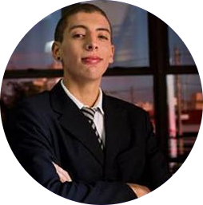

Current Administration (2019 - 2020)
< Administration (2018 - 2019)
Presidency
To insure the feasibility of GEUCI projects, a dedicated and responsible team is a must. That team is composed of the Presidency and Vice-Presidency posts, with their joint work comprising an important part of the organisation’s effectiveness and reach.
 Daniella Alves
Daniella Alves
PRESIDENT
The current president of the group, she has been a member of GEUCI since 2017. She was the one responsible for the development of the society axis, structuring it in a way that enables a closer participation of our local community in the internationalisation process.
Rogério Teodoro
VICE-PRESIDENT
Academy Axis
The academy axis seeks to intensify the flow of mobility students, be it through the collection and analysis of data or via engagement with other universities, both national and international.
 Kevin Xavier
Kevin Xavier
COORDINATOR
An International Relations student, Kevin has been part of the group since 2019. He is currently serving as interim coordinator of the axis.
 Kallan Sipple
Kallan Sipple
COUNSELLOR
Government Axis
The government axis participates directly in the internationalisation process through data collection and the establishment of partnerships with governmental bodies, working especially closely with the city council of Uberlândia.
 Hanna Issa
Hanna Issa
COORDINATOR
Currently in the eight period of International Relations and axis coordinator, she has been contributing to GEUCI since 2017.
Society Axis
The society axis actively pursues the involvement of the local population in the internationalisation process of the city, be it through local events and projects or by the dissemination of information via social media.
 Mateus Oliveira Gamito
Mateus Oliveira Gamito
COORDINATOR
Business Axis
The business axis strives to assist in the mediation of international business agreements in the city, doing so via data collection and analysis, consulting services and specific market analyses.
 João Pedro Gurgel
COORDINATOR
An International Relations undergraduate, he has been an active member of the group since 2019 and was elected to the position of coordinator in the 2019 general elections.